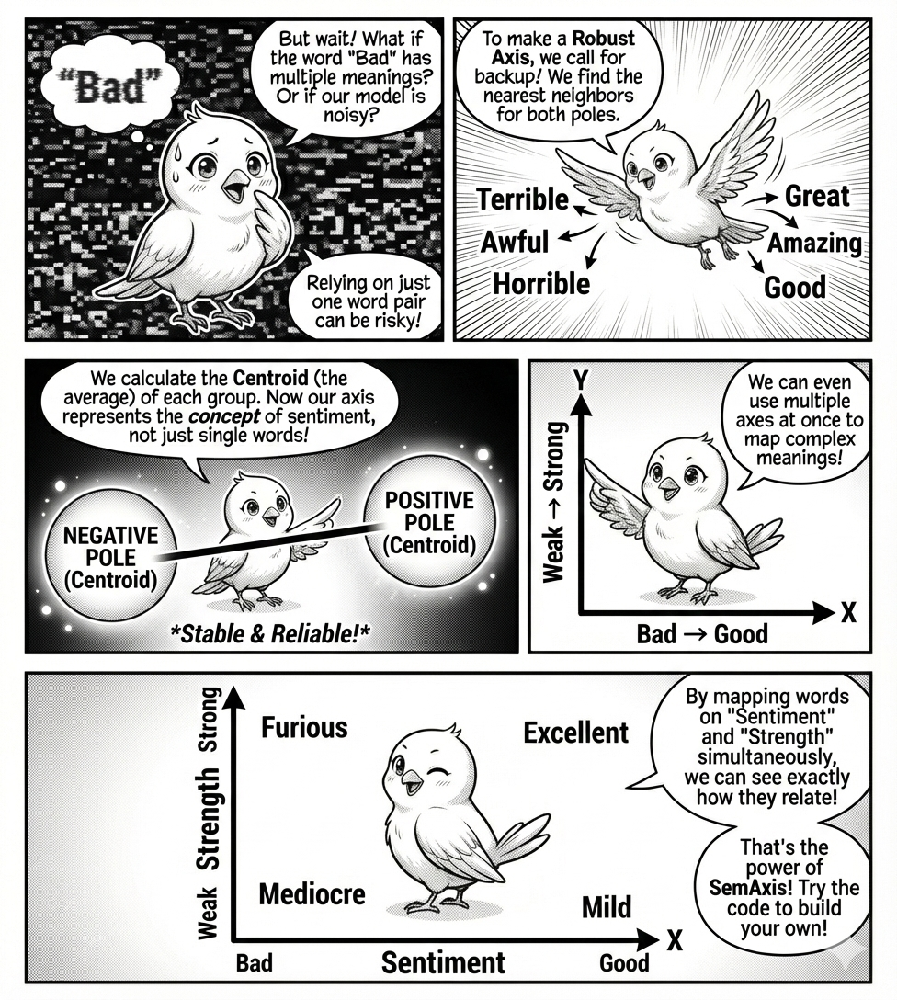

import numpy as np
import matplotlib.pyplot as plt
import gensim.downloader as api
# Download and load pre-trained GloVe embeddings
model = api.load("glove-wiki-gigaword-100")SemAxis: Meaning as Direction
1 Semaxis

We intuitively treat word embeddings as static maps where “king” is simply near “queen.” We assume the meaning is inherent to the coordinate itself, much like a city has a fixed latitude and longitude. This is a convenient fiction. In embedding, meaning emerges entirely from contrast, which is the key concept of Semaxis.
Semaxis (An, Kwak, and Ahn 2018, kwak2020semaxis) is a way to define a semantic axis by subtracting the vector of an antonym from a word (e.g., v_{good} - v_{bad}). This isolates a semantic dimension—an “axis”—that ignores all other information.
Formally, given two pole words w_+ and w_-, the axis is defined as:
v_{\text{axis}} = \frac{v_{w_+} - v_{w_-}}{||v_{w_+} - v_{w_-}\||_2}
where the denominator is the L_2 norm of the difference vector that ensures that axis vector v_{axis} is a unit vector.
Using this “ruler”, we project the words into this axis. Operationally, the position of a word w is given by the cosine similarity between v_{w} and v_{axis}.
\text{Position of w on axis $v_{\text{axis}}$} = \cos(v_{\text{axis}},v_{w})
We will build a “Sentiment Compass” to measure the emotional charge of words that aren’t explicitly emotional.
First, we load the standard GloVe embeddings.
Defining the Axis
We define the axis not as a point, but as the difference vector between two poles. This vector points from “bad” to “good.”
def create_axis(pos_word, neg_word, model):
return model[pos_word] - model[neg_word]
# The "Sentiment" Axis
sentiment_axis = create_axis("good", "bad", model)Measuring Alignment
To see where a word falls on this axis, we project it. Mathematically, this is the dot product (normalized). If the vector points in the same direction, the score is positive; if it points away, it is negative.
def get_score(word, axis, model):
v_word = model[word]
# Cosine similarity is just a normalized dot product
return np.dot(v_word, axis) / (np.linalg.norm(v_word) * np.linalg.norm(axis))
words = ["excellent", "terrible", "mediocre", "stone", "flower"]
for w in words:
print(f"{w}: {get_score(w, sentiment_axis, model):.3f}")excellent: 0.523
terrible: -0.208
mediocre: -0.001
stone: 0.181
flower: 0.204Robustness via Centroids

Single words are noisy. “Bad” might carry connotations of “naughty” or “poor quality.” To fix this, we don’t use single words; we use the centroid of a cluster of synonyms. This averages out the noise and leaves only the pure semantic signal.
def create_robust_axis(pos_word, neg_word, model, k=5):
# Get k nearest neighbors for both poles
pos_group = [pos_word]
pos_words = model.most_similar(pos_word, topn=k)
for word, _ in pos_words:
pos_group.append(word)
neg_group = [neg_word]
neg_words = model.most_similar(neg_word, topn=k)
for word, _ in neg_words:
neg_group.append(word)
# Average them to find the centroid
pos_vec = np.mean([model[w] for w in pos_group], axis=0)
neg_vec = np.mean([model[w] for w in neg_group], axis=0)
return pos_vec - neg_vec
robust_axis = create_robust_axis("good", "bad", model)The 2D Semantic Space
The real power comes when we cross two axes. By plotting words against “Sentiment” and “Intensity” (Strong vs. Weak), we reveal relationships that a single list hides.
Code
def plot_2d(words, axis_x, axis_y, model):
x_scores = [get_score(w, axis_x, model) for w in words]
y_scores = [get_score(w, axis_y, model) for w in words]
plt.figure(figsize=(5, 5))
plt.scatter(x_scores, y_scores)
for i, w in enumerate(words):
plt.annotate(
w,
(x_scores[i], y_scores[i]),
xytext=(5, 5),
textcoords="offset points",
fontsize=16,
)
plt.axhline(0, color="k", alpha=0.3)
plt.axvline(0, color="k", alpha=0.3)
plt.xlabel("Sentiment (Bad -> Good)")
plt.ylabel("Intensity (Weak -> Strong)")
plt.show()
intensity_axis = create_axis("strong", "weak", model)
test_words = [
"excellent",
"terrible",
"mediocre",
"mild",
"extreme",
"murder",
"charity",
]
plot_2d(test_words, sentiment_axis, intensity_axis, model)
2 The Takeaway
To define a concept, you must first define its opposite.
References
An, Jisun, Haewoon Kwak, and Yong-Yeol Ahn. 2018. “SemAxis: A Lightweight Framework to Characterize Domain-Specific Word Semantics Beyond Sentiment.” In Proceedings of the 56th Annual Meeting of the Association for Computational Linguistics (Volume 1: Long Papers), edited by Iryna Gurevych and Yusuke Miyao, 2450–61. Melbourne, Australia: Association for Computational Linguistics. https://doi.org/10.18653/v1/P18-1228.